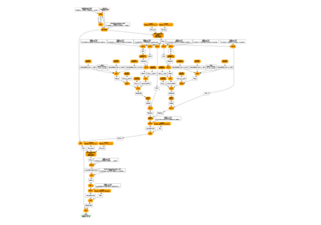

Note
Go to the end to download the full example code.
Export Phi-3.5-mini-instruct with draft_export
Tries torch.export._draft_export.draft_export().
Model
from contextlib import redirect_stderr
from io import StringIO
from typing import Any, Dict
import torch
import torch.export._draft_export
import transformers
from experimental_experiment.helpers import string_type
from onnx_diagnostic.helpers.cache_helper import make_dynamic_cache
from onnx_diagnostic.torch_export_patches import register_additional_serialization_functions
def get_phi35_untrained(batch_size: int = 2, **kwargs) -> Dict[str, Any]:
"""
Gets a non initialized model with two sets of inputs and different shapes.
:param batch_size: batch size
:param kwargs: to overwrite the configuration, example ``num_hidden_layers=1``
:return: dictionary
See `Phi-3.5-mini-instruct/config.json
<https://huggingface.co/microsoft/Phi-3.5-mini-instruct/blob/main/config.json>`_.
"""
config = {
"_name_or_path": "Phi-3.5-mini-instruct",
"architectures": ["Phi3ForCausalLM"],
"attention_dropout": 0.0,
"auto_map": {
"AutoConfig": "configuration_phi3.Phi3Config",
"AutoModelForCausalLM": "modeling_phi3.Phi3ForCausalLM",
},
"bos_token_id": 1,
"embd_pdrop": 0.0,
"eos_token_id": 32000,
"hidden_act": "silu",
"hidden_size": 3072,
"initializer_range": 0.02,
"intermediate_size": 8192,
"max_position_embeddings": 131072,
"model_type": "phi3",
"num_attention_heads": 32,
"num_hidden_layers": 32,
"num_key_value_heads": 32,
"original_max_position_embeddings": 4096,
"pad_token_id": 32000,
"resid_pdrop": 0.0,
"rms_norm_eps": 1e-05,
"rope_scaling": {
"long_factor": [
1.0800000429153442,
1.1100000143051147,
1.1399999856948853,
1.340000033378601,
1.5899999141693115,
1.600000023841858,
1.6200000047683716,
2.620000123977661,
3.2300000190734863,
3.2300000190734863,
4.789999961853027,
7.400000095367432,
7.700000286102295,
9.09000015258789,
12.199999809265137,
17.670000076293945,
24.46000099182129,
28.57000160217285,
30.420001983642578,
30.840002059936523,
32.590003967285156,
32.93000411987305,
42.320003509521484,
44.96000289916992,
50.340003967285156,
50.45000457763672,
57.55000305175781,
57.93000411987305,
58.21000289916992,
60.1400032043457,
62.61000442504883,
62.62000274658203,
62.71000289916992,
63.1400032043457,
63.1400032043457,
63.77000427246094,
63.93000411987305,
63.96000289916992,
63.970001220703125,
64.02999877929688,
64.06999969482422,
64.08000183105469,
64.12000274658203,
64.41000366210938,
64.4800033569336,
64.51000213623047,
64.52999877929688,
64.83999633789062,
],
"short_factor": [
1.0,
1.0199999809265137,
1.0299999713897705,
1.0299999713897705,
1.0499999523162842,
1.0499999523162842,
1.0499999523162842,
1.0499999523162842,
1.0499999523162842,
1.0699999332427979,
1.0999999046325684,
1.1099998950958252,
1.1599998474121094,
1.1599998474121094,
1.1699998378753662,
1.2899998426437378,
1.339999794960022,
1.679999828338623,
1.7899998426437378,
1.8199998140335083,
1.8499997854232788,
1.8799997568130493,
1.9099997282028198,
1.9399996995925903,
1.9899996519088745,
2.0199997425079346,
2.0199997425079346,
2.0199997425079346,
2.0199997425079346,
2.0199997425079346,
2.0199997425079346,
2.0299997329711914,
2.0299997329711914,
2.0299997329711914,
2.0299997329711914,
2.0299997329711914,
2.0299997329711914,
2.0299997329711914,
2.0299997329711914,
2.0299997329711914,
2.0799996852874756,
2.0899996757507324,
2.189999580383301,
2.2199995517730713,
2.5899994373321533,
2.729999542236328,
2.749999523162842,
2.8399994373321533,
],
"type": "longrope",
},
"rope_theta": 10000.0,
"sliding_window": 262144,
"tie_word_embeddings": False,
"torch_dtype": "bfloat16",
"use_cache": True,
"attention_bias": False,
"vocab_size": 32064,
}
config.update(**kwargs)
conf = transformers.Phi3Config(**config)
model = transformers.Phi3ForCausalLM(conf)
model.eval()
cache = make_dynamic_cache(
[
(torch.randn(batch_size, 32, 30, 96), torch.randn(batch_size, 32, 30, 96))
for i in range(config["num_hidden_layers"])
]
)
cache2 = make_dynamic_cache(
[
(torch.randn(batch_size + 1, 32, 31, 96), torch.randn(batch_size + 1, 32, 31, 96))
for i in range(config["num_hidden_layers"])
]
)
inputs = dict(
input_ids=torch.randint(0, 32064, (batch_size, 3)).to(torch.int64),
attention_mask=torch.ones((batch_size, 33)).to(torch.int64),
past_key_values=cache,
)
inputs2 = dict(
input_ids=torch.randint(0, 32064, (batch_size + 1, 4)).to(torch.int64),
attention_mask=torch.ones((batch_size + 1, 35)).to(torch.int64),
past_key_values=cache2,
)
return dict(inputs=inputs, model=model, inputs2=inputs2)
data = get_phi35_untrained(num_hidden_layers=2)
model, inputs, inputs2 = data["model"], data["inputs"], data["inputs2"]
print(string_type(inputs, with_shape=True))
dict(input_ids:T7s2x3,attention_mask:T7s2x33,past_key_values:DynamicCache(key_cache=#2[T1s2x32x30x96,T1s2x32x30x96], value_cache=#2[T1s2x32x30x96,T1s2x32x30x96]))
Draft Export
The function we want to try.
err = StringIO()
with redirect_stderr(err), register_additional_serialization_functions(patch_transformers=True):
ep = torch.export._draft_export.draft_export(model, tuple(), kwargs=inputs, strict=False)
Errors if any.
print(err.getvalue())
Lets print the report.
print(ep._report)
##############################################################################################
Congratuations: No issues are found during export, and it was able to soundly produce a graph.
You can now change back to torch.export.export()
##############################################################################################
And the exported program.
print(ep)
ExportedProgram:
class GraphModule(torch.nn.Module):
def forward(self, p_model_embed_tokens_weight: "f32[32064, 3072]", p_model_layers_0_self_attn_o_proj_weight: "f32[3072, 3072]", p_model_layers_0_self_attn_qkv_proj_weight: "f32[9216, 3072]", p_model_layers_0_mlp_gate_up_proj_weight: "f32[16384, 3072]", p_model_layers_0_mlp_down_proj_weight: "f32[3072, 8192]", p_model_layers_0_input_layernorm_weight: "f32[3072]", p_model_layers_0_post_attention_layernorm_weight: "f32[3072]", p_model_layers_1_self_attn_o_proj_weight: "f32[3072, 3072]", p_model_layers_1_self_attn_qkv_proj_weight: "f32[9216, 3072]", p_model_layers_1_mlp_gate_up_proj_weight: "f32[16384, 3072]", p_model_layers_1_mlp_down_proj_weight: "f32[3072, 8192]", p_model_layers_1_input_layernorm_weight: "f32[3072]", p_model_layers_1_post_attention_layernorm_weight: "f32[3072]", p_model_norm_weight: "f32[3072]", p_lm_head_weight: "f32[32064, 3072]", b_model_rotary_emb_inv_freq: "f32[48]", c_model_rotary_emb_lifted_tensor_0: "f32[48]", input_ids: "i64[2, 3]", attention_mask: "i64[2, 33]", past_key_values_key_0: "f32[2, 32, 30, 96]", past_key_values_value_0: "f32[2, 32, 30, 96]", past_key_values_key_1: "f32[2, 32, 30, 96]", past_key_values_value_1: "f32[2, 32, 30, 96]"):
# File: ~/github/transformers/src/transformers/models/phi3/modeling_phi3.py:417 in forward, code: causal_mask = mask_function(
function_const_func_spec0 = self.function_const_func_spec0
torch__dynamo__trace_wrapped_higher_order_op_mod_index0 = self.torch__dynamo__trace_wrapped_higher_order_op_ModIndex0
# File: ~/vv/this312/lib/python3.12/site-packages/torch/nn/modules/sparse.py:192 in forward, code: return F.embedding(
embedding: "f32[2, 3, 3072]" = torch.ops.aten.embedding.default(p_model_embed_tokens_weight, input_ids, 32000); p_model_embed_tokens_weight = input_ids = None
# File: ~/github/transformers/src/transformers/models/phi3/modeling_phi3.py:409 in forward, code: cache_position = torch.arange(
arange: "i64[3]" = torch.ops.aten.arange.start(30, 33, device = device(type='cpu'), pin_memory = False)
# File: ~/github/transformers/src/transformers/models/phi3/modeling_phi3.py:414 in forward, code: position_ids = cache_position.unsqueeze(0)
unsqueeze: "i64[1, 3]" = torch.ops.aten.unsqueeze.default(arange, 0)
# File: ~/github/transformers/src/transformers/models/phi3/modeling_phi3.py:417 in forward, code: causal_mask = mask_function(
_assert_tensor_metadata_default = torch.ops.aten._assert_tensor_metadata.default(attention_mask, dtype = torch.int64, device = device(type='cpu'), layout = torch.strided); _assert_tensor_metadata_default = None
to: "b8[2, 33]" = torch.ops.aten.to.device(attention_mask, device(type='cpu'), torch.bool); attention_mask = None
arange_1: "i64[33]" = torch.ops.aten.arange.default(33, device = device(type='cpu'), pin_memory = False)
add_: "i64[33]" = torch.ops.aten.add_.Tensor(arange_1, 0); arange_1 = None
arange_2: "i64[2]" = torch.ops.aten.arange.default(2, device = device(type='cpu'), pin_memory = False)
arange_3: "i64[1]" = torch.ops.aten.arange.default(1, device = device(type='cpu'), pin_memory = False)
lazy_load_decompositions = torch._functorch.predispatch.lazy_load_decompositions(); lazy_load_decompositions = None
_vmap_increment_nesting = torch._functorch.predispatch._vmap_increment_nesting(2, 'error'); _vmap_increment_nesting = None
_add_batch_dim: "i64[]" = torch._functorch.predispatch._add_batch_dim(arange_2, 0, 1); arange_2 = None
lazy_load_decompositions_1 = torch._functorch.predispatch.lazy_load_decompositions(); lazy_load_decompositions_1 = None
_vmap_increment_nesting_1 = torch._functorch.predispatch._vmap_increment_nesting(1, 'error'); _vmap_increment_nesting_1 = None
_add_batch_dim_1: "i64[]" = torch._functorch.predispatch._add_batch_dim(arange_3, 0, 2); arange_3 = _add_batch_dim_1 = None
lazy_load_decompositions_2 = torch._functorch.predispatch.lazy_load_decompositions(); lazy_load_decompositions_2 = None
_vmap_increment_nesting_2 = torch._functorch.predispatch._vmap_increment_nesting(3, 'error'); _vmap_increment_nesting_2 = None
_add_batch_dim_2: "i64[]" = torch._functorch.predispatch._add_batch_dim(arange, 0, 3); arange = None
lazy_load_decompositions_3 = torch._functorch.predispatch.lazy_load_decompositions(); lazy_load_decompositions_3 = None
_vmap_increment_nesting_3 = torch._functorch.predispatch._vmap_increment_nesting(33, 'error'); _vmap_increment_nesting_3 = None
_add_batch_dim_3: "i64[]" = torch._functorch.predispatch._add_batch_dim(add_, 0, 4); add_ = None
new_ones: "b8[]" = torch.ops.aten.new_ones.default(_add_batch_dim_2, [], dtype = torch.bool, pin_memory = False)
new_ones_1: "b8[]" = torch.ops.aten.new_ones.default(_add_batch_dim_2, [], dtype = torch.bool, pin_memory = False)
sub: "i64[]" = torch.ops.aten.sub.Tensor(_add_batch_dim_2, 262144)
gt: "b8[]" = torch.ops.aten.gt.Tensor(_add_batch_dim_3, sub); sub = None
_assert_tensor_metadata_default_1 = torch.ops.aten._assert_tensor_metadata.default(gt, dtype = torch.bool, device = device(type='cpu'), layout = torch.strided); _assert_tensor_metadata_default_1 = None
to_1: "b8[]" = torch.ops.aten.to.dtype_layout(gt, dtype = torch.bool, layout = torch.strided, device = device(type='cpu')); gt = None
and_1: "b8[]" = torch.ops.aten.__and__.Tensor(new_ones_1, to_1); new_ones_1 = to_1 = None
le: "b8[]" = torch.ops.aten.le.Tensor(_add_batch_dim_3, _add_batch_dim_2); _add_batch_dim_2 = None
_assert_tensor_metadata_default_2 = torch.ops.aten._assert_tensor_metadata.default(le, dtype = torch.bool, device = device(type='cpu'), layout = torch.strided); _assert_tensor_metadata_default_2 = None
to_2: "b8[]" = torch.ops.aten.to.dtype_layout(le, dtype = torch.bool, layout = torch.strided, device = device(type='cpu')); le = None
and_2: "b8[]" = torch.ops.aten.__and__.Tensor(and_1, to_2); and_1 = to_2 = None
_assert_tensor_metadata_default_3 = torch.ops.aten._assert_tensor_metadata.default(and_2, dtype = torch.bool, device = device(type='cpu'), layout = torch.strided); _assert_tensor_metadata_default_3 = None
to_3: "b8[]" = torch.ops.aten.to.dtype_layout(and_2, dtype = torch.bool, layout = torch.strided, device = device(type='cpu')); and_2 = None
and_3: "b8[]" = torch.ops.aten.__and__.Tensor(new_ones, to_3); new_ones = to_3 = None
flat_apply: "b8[]" = torch.ops.higher_order.flat_apply(function_const_func_spec0, torch__dynamo__trace_wrapped_higher_order_op_mod_index0, 'torch._dynamo._trace_wrapped_higher_order_op.ModIndex', to, _add_batch_dim, _add_batch_dim_3); function_const_func_spec0 = torch__dynamo__trace_wrapped_higher_order_op_mod_index0 = to = _add_batch_dim = _add_batch_dim_3 = None
_assert_tensor_metadata_default_4 = torch.ops.aten._assert_tensor_metadata.default(flat_apply, dtype = torch.bool, device = device(type='cpu'), layout = torch.strided); _assert_tensor_metadata_default_4 = None
to_4: "b8[]" = torch.ops.aten.to.dtype_layout(flat_apply, dtype = torch.bool, layout = torch.strided, device = device(type='cpu')); flat_apply = None
and_4: "b8[]" = torch.ops.aten.__and__.Tensor(and_3, to_4); and_3 = to_4 = None
_remove_batch_dim: "b8[33]" = torch._functorch.predispatch._remove_batch_dim(and_4, 4, 33, 0); and_4 = None
_vmap_decrement_nesting = torch._functorch.predispatch._vmap_decrement_nesting(); _vmap_decrement_nesting = None
_remove_batch_dim_1: "b8[3, 33]" = torch._functorch.predispatch._remove_batch_dim(_remove_batch_dim, 3, 3, 0); _remove_batch_dim = None
_vmap_decrement_nesting_1 = torch._functorch.predispatch._vmap_decrement_nesting(); _vmap_decrement_nesting_1 = None
_remove_batch_dim_2: "b8[1, 3, 33]" = torch._functorch.predispatch._remove_batch_dim(_remove_batch_dim_1, 2, 1, 0)
expand: "b8[1, 3, 33]" = torch.ops.aten.expand.default(_remove_batch_dim_1, [1, 3, 33]); _remove_batch_dim_1 = expand = None
_vmap_decrement_nesting_2 = torch._functorch.predispatch._vmap_decrement_nesting(); _vmap_decrement_nesting_2 = None
_remove_batch_dim_3: "b8[2, 1, 3, 33]" = torch._functorch.predispatch._remove_batch_dim(_remove_batch_dim_2, 1, 2, 0); _remove_batch_dim_2 = None
_vmap_decrement_nesting_3 = torch._functorch.predispatch._vmap_decrement_nesting(); _vmap_decrement_nesting_3 = None
# No stacktrace found for following nodes
submod_3 = self.submod_1
wrap_with_set_grad_enabled = torch.ops.higher_order.wrap_with_set_grad_enabled(False, submod_3, unsqueeze, c_model_rotary_emb_lifted_tensor_0); submod_3 = unsqueeze = c_model_rotary_emb_lifted_tensor_0 = None
# File: ~/github/transformers/src/transformers/models/phi3/modeling_phi3.py:132 in forward, code: return cos.to(dtype=x.dtype), sin.to(dtype=x.dtype)
to_11: "f32[1, 3, 96]" = wrap_with_set_grad_enabled[0]
to_12: "f32[1, 3, 96]" = wrap_with_set_grad_enabled[1]; wrap_with_set_grad_enabled = None
# File: ~/github/transformers/src/transformers/models/phi3/modeling_phi3.py:293 in forward, code: hidden_states = hidden_states.to(torch.float32)
_assert_tensor_metadata_default_13 = torch.ops.aten._assert_tensor_metadata.default(embedding, dtype = torch.float32, device = device(type='cpu'), layout = torch.strided); _assert_tensor_metadata_default_13 = None
to_13: "f32[2, 3, 3072]" = torch.ops.aten.to.dtype(embedding, torch.float32); embedding = None
# File: ~/github/transformers/src/transformers/models/phi3/modeling_phi3.py:294 in forward, code: variance = hidden_states.pow(2).mean(-1, keepdim=True)
pow_1: "f32[2, 3, 3072]" = torch.ops.aten.pow.Tensor_Scalar(to_13, 2)
mean: "f32[2, 3, 1]" = torch.ops.aten.mean.dim(pow_1, [-1], True); pow_1 = None
# File: ~/github/transformers/src/transformers/models/phi3/modeling_phi3.py:295 in forward, code: hidden_states = hidden_states * torch.rsqrt(variance + self.variance_epsilon)
add_1: "f32[2, 3, 1]" = torch.ops.aten.add.Tensor(mean, 1e-05); mean = None
rsqrt: "f32[2, 3, 1]" = torch.ops.aten.rsqrt.default(add_1); add_1 = None
mul_2: "f32[2, 3, 3072]" = torch.ops.aten.mul.Tensor(to_13, rsqrt); rsqrt = None
# File: ~/github/transformers/src/transformers/models/phi3/modeling_phi3.py:296 in forward, code: return self.weight * hidden_states.to(input_dtype)
_assert_tensor_metadata_default_14 = torch.ops.aten._assert_tensor_metadata.default(mul_2, dtype = torch.float32, device = device(type='cpu'), layout = torch.strided); _assert_tensor_metadata_default_14 = None
to_14: "f32[2, 3, 3072]" = torch.ops.aten.to.dtype(mul_2, torch.float32); mul_2 = None
mul_3: "f32[2, 3, 3072]" = torch.ops.aten.mul.Tensor(p_model_layers_0_input_layernorm_weight, to_14); p_model_layers_0_input_layernorm_weight = to_14 = None
# File: ~/vv/this312/lib/python3.12/site-packages/torch/nn/modules/linear.py:134 in forward, code: return F.linear(input, self.weight, self.bias)
linear: "f32[2, 3, 9216]" = torch.ops.aten.linear.default(mul_3, p_model_layers_0_self_attn_qkv_proj_weight); mul_3 = p_model_layers_0_self_attn_qkv_proj_weight = None
# File: ~/github/transformers/src/transformers/models/phi3/modeling_phi3.py:244 in forward, code: query_states = qkv[..., :query_pos]
slice_1: "f32[2, 3, 3072]" = torch.ops.aten.slice.Tensor(linear, 2, 0, 3072)
# File: ~/github/transformers/src/transformers/models/phi3/modeling_phi3.py:245 in forward, code: key_states = qkv[..., query_pos : query_pos + self.num_key_value_heads * self.head_dim]
slice_2: "f32[2, 3, 3072]" = torch.ops.aten.slice.Tensor(linear, 2, 3072, 6144)
# File: ~/github/transformers/src/transformers/models/phi3/modeling_phi3.py:246 in forward, code: value_states = qkv[..., query_pos + self.num_key_value_heads * self.head_dim :]
slice_3: "f32[2, 3, 3072]" = torch.ops.aten.slice.Tensor(linear, 2, 6144, 9223372036854775807); linear = None
# File: ~/github/transformers/src/transformers/models/phi3/modeling_phi3.py:248 in forward, code: query_states = query_states.view(hidden_shape).transpose(1, 2)
view: "f32[2, 3, 32, 96]" = torch.ops.aten.view.default(slice_1, [2, 3, -1, 96]); slice_1 = None
transpose_1: "f32[2, 32, 3, 96]" = torch.ops.aten.transpose.int(view, 1, 2); view = None
# File: ~/github/transformers/src/transformers/models/phi3/modeling_phi3.py:249 in forward, code: key_states = key_states.view(hidden_shape).transpose(1, 2)
view_1: "f32[2, 3, 32, 96]" = torch.ops.aten.view.default(slice_2, [2, 3, -1, 96]); slice_2 = None
transpose_2: "f32[2, 32, 3, 96]" = torch.ops.aten.transpose.int(view_1, 1, 2); view_1 = None
# File: ~/github/transformers/src/transformers/models/phi3/modeling_phi3.py:250 in forward, code: value_states = value_states.view(hidden_shape).transpose(1, 2)
view_2: "f32[2, 3, 32, 96]" = torch.ops.aten.view.default(slice_3, [2, 3, -1, 96]); slice_3 = None
transpose_3: "f32[2, 32, 3, 96]" = torch.ops.aten.transpose.int(view_2, 1, 2); view_2 = None
# File: ~/github/transformers/src/transformers/models/phi3/modeling_phi3.py:253 in forward, code: query_states, key_states = apply_rotary_pos_emb(query_states, key_states, cos, sin)
unsqueeze_4: "f32[1, 1, 3, 96]" = torch.ops.aten.unsqueeze.default(to_11, 1)
unsqueeze_5: "f32[1, 1, 3, 96]" = torch.ops.aten.unsqueeze.default(to_12, 1)
alias: "f32[2, 32, 3, 96]" = torch.ops.aten.alias.default(transpose_1)
slice_4: "f32[2, 32, 3, 0]" = torch.ops.aten.slice.Tensor(transpose_1, 3, 96, 9223372036854775807); transpose_1 = None
alias_1: "f32[2, 32, 3, 96]" = torch.ops.aten.alias.default(transpose_2)
slice_5: "f32[2, 32, 3, 0]" = torch.ops.aten.slice.Tensor(transpose_2, 3, 96, 9223372036854775807); transpose_2 = None
mul_4: "f32[2, 32, 3, 96]" = torch.ops.aten.mul.Tensor(alias, unsqueeze_4)
slice_6: "f32[2, 32, 3, 48]" = torch.ops.aten.slice.Tensor(alias, 3, 0, 48)
slice_7: "f32[2, 32, 3, 48]" = torch.ops.aten.slice.Tensor(alias, 3, 48, 9223372036854775807); alias = None
neg: "f32[2, 32, 3, 48]" = torch.ops.aten.neg.default(slice_7); slice_7 = None
cat_1: "f32[2, 32, 3, 96]" = torch.ops.aten.cat.default([neg, slice_6], -1); neg = slice_6 = None
mul_5: "f32[2, 32, 3, 96]" = torch.ops.aten.mul.Tensor(cat_1, unsqueeze_5); cat_1 = None
add_2: "f32[2, 32, 3, 96]" = torch.ops.aten.add.Tensor(mul_4, mul_5); mul_4 = mul_5 = None
cat_2: "f32[2, 32, 3, 96]" = torch.ops.aten.cat.default([add_2, slice_4], -1); add_2 = slice_4 = None
mul_6: "f32[2, 32, 3, 96]" = torch.ops.aten.mul.Tensor(alias_1, unsqueeze_4); unsqueeze_4 = None
slice_8: "f32[2, 32, 3, 48]" = torch.ops.aten.slice.Tensor(alias_1, 3, 0, 48)
slice_9: "f32[2, 32, 3, 48]" = torch.ops.aten.slice.Tensor(alias_1, 3, 48, 9223372036854775807); alias_1 = None
neg_1: "f32[2, 32, 3, 48]" = torch.ops.aten.neg.default(slice_9); slice_9 = None
cat_3: "f32[2, 32, 3, 96]" = torch.ops.aten.cat.default([neg_1, slice_8], -1); neg_1 = slice_8 = None
mul_7: "f32[2, 32, 3, 96]" = torch.ops.aten.mul.Tensor(cat_3, unsqueeze_5); cat_3 = unsqueeze_5 = None
add_3: "f32[2, 32, 3, 96]" = torch.ops.aten.add.Tensor(mul_6, mul_7); mul_6 = mul_7 = None
cat_4: "f32[2, 32, 3, 96]" = torch.ops.aten.cat.default([add_3, slice_5], -1); add_3 = slice_5 = None
# File: ~/github/transformers/src/transformers/models/phi3/modeling_phi3.py:258 in forward, code: key_states, value_states = past_key_values.update(key_states, value_states, self.layer_idx, cache_kwargs)
cat_5: "f32[2, 32, 33, 96]" = torch.ops.aten.cat.default([past_key_values_key_0, cat_4], -2); past_key_values_key_0 = cat_4 = None
cat_6: "f32[2, 32, 33, 96]" = torch.ops.aten.cat.default([past_key_values_value_0, transpose_3], -2); past_key_values_value_0 = transpose_3 = None
# File: ~/github/transformers/src/transformers/models/phi3/modeling_phi3.py:264 in forward, code: attn_output, attn_weights = attention_interface(
alias_2: "b8[2, 1, 3, 33]" = torch.ops.aten.alias.default(_remove_batch_dim_3)
scaled_dot_product_attention: "f32[2, 32, 3, 96]" = torch.ops.aten.scaled_dot_product_attention.default(cat_2, cat_5, cat_6, alias_2, scale = 0.10206207261596575); cat_2 = alias_2 = None
transpose_4: "f32[2, 3, 32, 96]" = torch.ops.aten.transpose.int(scaled_dot_product_attention, 1, 2); scaled_dot_product_attention = None
contiguous: "f32[2, 3, 32, 96]" = torch.ops.aten.contiguous.default(transpose_4); transpose_4 = None
# File: ~/github/transformers/src/transformers/models/phi3/modeling_phi3.py:276 in forward, code: attn_output = attn_output.reshape(*input_shape, -1).contiguous()
reshape: "f32[2, 3, 3072]" = torch.ops.aten.reshape.default(contiguous, [2, 3, -1]); contiguous = None
# File: ~/vv/this312/lib/python3.12/site-packages/torch/nn/modules/linear.py:134 in forward, code: return F.linear(input, self.weight, self.bias)
linear_1: "f32[2, 3, 3072]" = torch.ops.aten.linear.default(reshape, p_model_layers_0_self_attn_o_proj_weight); reshape = p_model_layers_0_self_attn_o_proj_weight = None
# File: ~/vv/this312/lib/python3.12/site-packages/torch/nn/modules/dropout.py:73 in forward, code: return F.dropout(input, self.p, self.training, self.inplace)
dropout: "f32[2, 3, 3072]" = torch.ops.aten.dropout.default(linear_1, 0.0, False); linear_1 = None
# File: ~/github/transformers/src/transformers/models/phi3/modeling_phi3.py:338 in forward, code: hidden_states = residual + self.resid_attn_dropout(hidden_states) # main diff with Llama
add_4: "f32[2, 3, 3072]" = torch.ops.aten.add.Tensor(to_13, dropout); to_13 = dropout = None
# File: ~/github/transformers/src/transformers/models/phi3/modeling_phi3.py:293 in forward, code: hidden_states = hidden_states.to(torch.float32)
_assert_tensor_metadata_default_15 = torch.ops.aten._assert_tensor_metadata.default(add_4, dtype = torch.float32, device = device(type='cpu'), layout = torch.strided); _assert_tensor_metadata_default_15 = None
to_15: "f32[2, 3, 3072]" = torch.ops.aten.to.dtype(add_4, torch.float32); add_4 = None
# File: ~/github/transformers/src/transformers/models/phi3/modeling_phi3.py:294 in forward, code: variance = hidden_states.pow(2).mean(-1, keepdim=True)
pow_2: "f32[2, 3, 3072]" = torch.ops.aten.pow.Tensor_Scalar(to_15, 2)
mean_1: "f32[2, 3, 1]" = torch.ops.aten.mean.dim(pow_2, [-1], True); pow_2 = None
# File: ~/github/transformers/src/transformers/models/phi3/modeling_phi3.py:295 in forward, code: hidden_states = hidden_states * torch.rsqrt(variance + self.variance_epsilon)
add_5: "f32[2, 3, 1]" = torch.ops.aten.add.Tensor(mean_1, 1e-05); mean_1 = None
rsqrt_1: "f32[2, 3, 1]" = torch.ops.aten.rsqrt.default(add_5); add_5 = None
mul_8: "f32[2, 3, 3072]" = torch.ops.aten.mul.Tensor(to_15, rsqrt_1); rsqrt_1 = None
# File: ~/github/transformers/src/transformers/models/phi3/modeling_phi3.py:296 in forward, code: return self.weight * hidden_states.to(input_dtype)
_assert_tensor_metadata_default_16 = torch.ops.aten._assert_tensor_metadata.default(mul_8, dtype = torch.float32, device = device(type='cpu'), layout = torch.strided); _assert_tensor_metadata_default_16 = None
to_16: "f32[2, 3, 3072]" = torch.ops.aten.to.dtype(mul_8, torch.float32); mul_8 = None
mul_9: "f32[2, 3, 3072]" = torch.ops.aten.mul.Tensor(p_model_layers_0_post_attention_layernorm_weight, to_16); p_model_layers_0_post_attention_layernorm_weight = to_16 = None
# File: ~/vv/this312/lib/python3.12/site-packages/torch/nn/modules/linear.py:134 in forward, code: return F.linear(input, self.weight, self.bias)
linear_2: "f32[2, 3, 16384]" = torch.ops.aten.linear.default(mul_9, p_model_layers_0_mlp_gate_up_proj_weight); mul_9 = p_model_layers_0_mlp_gate_up_proj_weight = None
# File: ~/github/transformers/src/transformers/models/phi3/modeling_phi3.py:62 in forward, code: gate, up_states = up_states.chunk(2, dim=-1)
chunk = torch.ops.aten.chunk.default(linear_2, 2, -1); linear_2 = None
getitem_10: "f32[2, 3, 8192]" = chunk[0]
getitem_11: "f32[2, 3, 8192]" = chunk[1]; chunk = None
# File: ~/github/transformers/src/transformers/activations.py:103 in forward, code: return nn.functional.silu(input)
silu: "f32[2, 3, 8192]" = torch.ops.aten.silu.default(getitem_10); getitem_10 = None
# File: ~/github/transformers/src/transformers/models/phi3/modeling_phi3.py:63 in forward, code: up_states = up_states * self.activation_fn(gate)
mul_10: "f32[2, 3, 8192]" = torch.ops.aten.mul.Tensor(getitem_11, silu); getitem_11 = silu = None
# File: ~/vv/this312/lib/python3.12/site-packages/torch/nn/modules/linear.py:134 in forward, code: return F.linear(input, self.weight, self.bias)
linear_3: "f32[2, 3, 3072]" = torch.ops.aten.linear.default(mul_10, p_model_layers_0_mlp_down_proj_weight); mul_10 = p_model_layers_0_mlp_down_proj_weight = None
# File: ~/vv/this312/lib/python3.12/site-packages/torch/nn/modules/dropout.py:73 in forward, code: return F.dropout(input, self.p, self.training, self.inplace)
dropout_1: "f32[2, 3, 3072]" = torch.ops.aten.dropout.default(linear_3, 0.0, False); linear_3 = None
# File: ~/github/transformers/src/transformers/models/phi3/modeling_phi3.py:343 in forward, code: hidden_states = residual + self.resid_mlp_dropout(hidden_states) # main diff with Llama
add_6: "f32[2, 3, 3072]" = torch.ops.aten.add.Tensor(to_15, dropout_1); to_15 = dropout_1 = None
# File: ~/github/transformers/src/transformers/models/phi3/modeling_phi3.py:293 in forward, code: hidden_states = hidden_states.to(torch.float32)
_assert_tensor_metadata_default_17 = torch.ops.aten._assert_tensor_metadata.default(add_6, dtype = torch.float32, device = device(type='cpu'), layout = torch.strided); _assert_tensor_metadata_default_17 = None
to_17: "f32[2, 3, 3072]" = torch.ops.aten.to.dtype(add_6, torch.float32); add_6 = None
# File: ~/github/transformers/src/transformers/models/phi3/modeling_phi3.py:294 in forward, code: variance = hidden_states.pow(2).mean(-1, keepdim=True)
pow_3: "f32[2, 3, 3072]" = torch.ops.aten.pow.Tensor_Scalar(to_17, 2)
mean_2: "f32[2, 3, 1]" = torch.ops.aten.mean.dim(pow_3, [-1], True); pow_3 = None
# File: ~/github/transformers/src/transformers/models/phi3/modeling_phi3.py:295 in forward, code: hidden_states = hidden_states * torch.rsqrt(variance + self.variance_epsilon)
add_7: "f32[2, 3, 1]" = torch.ops.aten.add.Tensor(mean_2, 1e-05); mean_2 = None
rsqrt_2: "f32[2, 3, 1]" = torch.ops.aten.rsqrt.default(add_7); add_7 = None
mul_11: "f32[2, 3, 3072]" = torch.ops.aten.mul.Tensor(to_17, rsqrt_2); rsqrt_2 = None
# File: ~/github/transformers/src/transformers/models/phi3/modeling_phi3.py:296 in forward, code: return self.weight * hidden_states.to(input_dtype)
_assert_tensor_metadata_default_18 = torch.ops.aten._assert_tensor_metadata.default(mul_11, dtype = torch.float32, device = device(type='cpu'), layout = torch.strided); _assert_tensor_metadata_default_18 = None
to_18: "f32[2, 3, 3072]" = torch.ops.aten.to.dtype(mul_11, torch.float32); mul_11 = None
mul_12: "f32[2, 3, 3072]" = torch.ops.aten.mul.Tensor(p_model_layers_1_input_layernorm_weight, to_18); p_model_layers_1_input_layernorm_weight = to_18 = None
# File: ~/vv/this312/lib/python3.12/site-packages/torch/nn/modules/linear.py:134 in forward, code: return F.linear(input, self.weight, self.bias)
linear_4: "f32[2, 3, 9216]" = torch.ops.aten.linear.default(mul_12, p_model_layers_1_self_attn_qkv_proj_weight); mul_12 = p_model_layers_1_self_attn_qkv_proj_weight = None
# File: ~/github/transformers/src/transformers/models/phi3/modeling_phi3.py:244 in forward, code: query_states = qkv[..., :query_pos]
slice_10: "f32[2, 3, 3072]" = torch.ops.aten.slice.Tensor(linear_4, 2, 0, 3072)
# File: ~/github/transformers/src/transformers/models/phi3/modeling_phi3.py:245 in forward, code: key_states = qkv[..., query_pos : query_pos + self.num_key_value_heads * self.head_dim]
slice_11: "f32[2, 3, 3072]" = torch.ops.aten.slice.Tensor(linear_4, 2, 3072, 6144)
# File: ~/github/transformers/src/transformers/models/phi3/modeling_phi3.py:246 in forward, code: value_states = qkv[..., query_pos + self.num_key_value_heads * self.head_dim :]
slice_12: "f32[2, 3, 3072]" = torch.ops.aten.slice.Tensor(linear_4, 2, 6144, 9223372036854775807); linear_4 = None
# File: ~/github/transformers/src/transformers/models/phi3/modeling_phi3.py:248 in forward, code: query_states = query_states.view(hidden_shape).transpose(1, 2)
view_3: "f32[2, 3, 32, 96]" = torch.ops.aten.view.default(slice_10, [2, 3, -1, 96]); slice_10 = None
transpose_5: "f32[2, 32, 3, 96]" = torch.ops.aten.transpose.int(view_3, 1, 2); view_3 = None
# File: ~/github/transformers/src/transformers/models/phi3/modeling_phi3.py:249 in forward, code: key_states = key_states.view(hidden_shape).transpose(1, 2)
view_4: "f32[2, 3, 32, 96]" = torch.ops.aten.view.default(slice_11, [2, 3, -1, 96]); slice_11 = None
transpose_6: "f32[2, 32, 3, 96]" = torch.ops.aten.transpose.int(view_4, 1, 2); view_4 = None
# File: ~/github/transformers/src/transformers/models/phi3/modeling_phi3.py:250 in forward, code: value_states = value_states.view(hidden_shape).transpose(1, 2)
view_5: "f32[2, 3, 32, 96]" = torch.ops.aten.view.default(slice_12, [2, 3, -1, 96]); slice_12 = None
transpose_7: "f32[2, 32, 3, 96]" = torch.ops.aten.transpose.int(view_5, 1, 2); view_5 = None
# File: ~/github/transformers/src/transformers/models/phi3/modeling_phi3.py:253 in forward, code: query_states, key_states = apply_rotary_pos_emb(query_states, key_states, cos, sin)
unsqueeze_6: "f32[1, 1, 3, 96]" = torch.ops.aten.unsqueeze.default(to_11, 1); to_11 = None
unsqueeze_7: "f32[1, 1, 3, 96]" = torch.ops.aten.unsqueeze.default(to_12, 1); to_12 = None
alias_3: "f32[2, 32, 3, 96]" = torch.ops.aten.alias.default(transpose_5)
slice_13: "f32[2, 32, 3, 0]" = torch.ops.aten.slice.Tensor(transpose_5, 3, 96, 9223372036854775807); transpose_5 = None
alias_4: "f32[2, 32, 3, 96]" = torch.ops.aten.alias.default(transpose_6)
slice_14: "f32[2, 32, 3, 0]" = torch.ops.aten.slice.Tensor(transpose_6, 3, 96, 9223372036854775807); transpose_6 = None
mul_13: "f32[2, 32, 3, 96]" = torch.ops.aten.mul.Tensor(alias_3, unsqueeze_6)
slice_15: "f32[2, 32, 3, 48]" = torch.ops.aten.slice.Tensor(alias_3, 3, 0, 48)
slice_16: "f32[2, 32, 3, 48]" = torch.ops.aten.slice.Tensor(alias_3, 3, 48, 9223372036854775807); alias_3 = None
neg_2: "f32[2, 32, 3, 48]" = torch.ops.aten.neg.default(slice_16); slice_16 = None
cat_7: "f32[2, 32, 3, 96]" = torch.ops.aten.cat.default([neg_2, slice_15], -1); neg_2 = slice_15 = None
mul_14: "f32[2, 32, 3, 96]" = torch.ops.aten.mul.Tensor(cat_7, unsqueeze_7); cat_7 = None
add_8: "f32[2, 32, 3, 96]" = torch.ops.aten.add.Tensor(mul_13, mul_14); mul_13 = mul_14 = None
cat_8: "f32[2, 32, 3, 96]" = torch.ops.aten.cat.default([add_8, slice_13], -1); add_8 = slice_13 = None
mul_15: "f32[2, 32, 3, 96]" = torch.ops.aten.mul.Tensor(alias_4, unsqueeze_6); unsqueeze_6 = None
slice_17: "f32[2, 32, 3, 48]" = torch.ops.aten.slice.Tensor(alias_4, 3, 0, 48)
slice_18: "f32[2, 32, 3, 48]" = torch.ops.aten.slice.Tensor(alias_4, 3, 48, 9223372036854775807); alias_4 = None
neg_3: "f32[2, 32, 3, 48]" = torch.ops.aten.neg.default(slice_18); slice_18 = None
cat_9: "f32[2, 32, 3, 96]" = torch.ops.aten.cat.default([neg_3, slice_17], -1); neg_3 = slice_17 = None
mul_16: "f32[2, 32, 3, 96]" = torch.ops.aten.mul.Tensor(cat_9, unsqueeze_7); cat_9 = unsqueeze_7 = None
add_9: "f32[2, 32, 3, 96]" = torch.ops.aten.add.Tensor(mul_15, mul_16); mul_15 = mul_16 = None
cat_10: "f32[2, 32, 3, 96]" = torch.ops.aten.cat.default([add_9, slice_14], -1); add_9 = slice_14 = None
# File: ~/github/transformers/src/transformers/models/phi3/modeling_phi3.py:258 in forward, code: key_states, value_states = past_key_values.update(key_states, value_states, self.layer_idx, cache_kwargs)
cat_11: "f32[2, 32, 33, 96]" = torch.ops.aten.cat.default([past_key_values_key_1, cat_10], -2); past_key_values_key_1 = cat_10 = None
cat_12: "f32[2, 32, 33, 96]" = torch.ops.aten.cat.default([past_key_values_value_1, transpose_7], -2); past_key_values_value_1 = transpose_7 = None
# File: ~/github/transformers/src/transformers/models/phi3/modeling_phi3.py:264 in forward, code: attn_output, attn_weights = attention_interface(
alias_5: "b8[2, 1, 3, 33]" = torch.ops.aten.alias.default(_remove_batch_dim_3); _remove_batch_dim_3 = None
scaled_dot_product_attention_1: "f32[2, 32, 3, 96]" = torch.ops.aten.scaled_dot_product_attention.default(cat_8, cat_11, cat_12, alias_5, scale = 0.10206207261596575); cat_8 = alias_5 = None
transpose_8: "f32[2, 3, 32, 96]" = torch.ops.aten.transpose.int(scaled_dot_product_attention_1, 1, 2); scaled_dot_product_attention_1 = None
contiguous_1: "f32[2, 3, 32, 96]" = torch.ops.aten.contiguous.default(transpose_8); transpose_8 = None
# File: ~/github/transformers/src/transformers/models/phi3/modeling_phi3.py:276 in forward, code: attn_output = attn_output.reshape(*input_shape, -1).contiguous()
reshape_1: "f32[2, 3, 3072]" = torch.ops.aten.reshape.default(contiguous_1, [2, 3, -1]); contiguous_1 = None
# File: ~/vv/this312/lib/python3.12/site-packages/torch/nn/modules/linear.py:134 in forward, code: return F.linear(input, self.weight, self.bias)
linear_5: "f32[2, 3, 3072]" = torch.ops.aten.linear.default(reshape_1, p_model_layers_1_self_attn_o_proj_weight); reshape_1 = p_model_layers_1_self_attn_o_proj_weight = None
# File: ~/vv/this312/lib/python3.12/site-packages/torch/nn/modules/dropout.py:73 in forward, code: return F.dropout(input, self.p, self.training, self.inplace)
dropout_2: "f32[2, 3, 3072]" = torch.ops.aten.dropout.default(linear_5, 0.0, False); linear_5 = None
# File: ~/github/transformers/src/transformers/models/phi3/modeling_phi3.py:338 in forward, code: hidden_states = residual + self.resid_attn_dropout(hidden_states) # main diff with Llama
add_10: "f32[2, 3, 3072]" = torch.ops.aten.add.Tensor(to_17, dropout_2); to_17 = dropout_2 = None
# File: ~/github/transformers/src/transformers/models/phi3/modeling_phi3.py:293 in forward, code: hidden_states = hidden_states.to(torch.float32)
_assert_tensor_metadata_default_19 = torch.ops.aten._assert_tensor_metadata.default(add_10, dtype = torch.float32, device = device(type='cpu'), layout = torch.strided); _assert_tensor_metadata_default_19 = None
to_19: "f32[2, 3, 3072]" = torch.ops.aten.to.dtype(add_10, torch.float32); add_10 = None
# File: ~/github/transformers/src/transformers/models/phi3/modeling_phi3.py:294 in forward, code: variance = hidden_states.pow(2).mean(-1, keepdim=True)
pow_4: "f32[2, 3, 3072]" = torch.ops.aten.pow.Tensor_Scalar(to_19, 2)
mean_3: "f32[2, 3, 1]" = torch.ops.aten.mean.dim(pow_4, [-1], True); pow_4 = None
# File: ~/github/transformers/src/transformers/models/phi3/modeling_phi3.py:295 in forward, code: hidden_states = hidden_states * torch.rsqrt(variance + self.variance_epsilon)
add_11: "f32[2, 3, 1]" = torch.ops.aten.add.Tensor(mean_3, 1e-05); mean_3 = None
rsqrt_3: "f32[2, 3, 1]" = torch.ops.aten.rsqrt.default(add_11); add_11 = None
mul_17: "f32[2, 3, 3072]" = torch.ops.aten.mul.Tensor(to_19, rsqrt_3); rsqrt_3 = None
# File: ~/github/transformers/src/transformers/models/phi3/modeling_phi3.py:296 in forward, code: return self.weight * hidden_states.to(input_dtype)
_assert_tensor_metadata_default_20 = torch.ops.aten._assert_tensor_metadata.default(mul_17, dtype = torch.float32, device = device(type='cpu'), layout = torch.strided); _assert_tensor_metadata_default_20 = None
to_20: "f32[2, 3, 3072]" = torch.ops.aten.to.dtype(mul_17, torch.float32); mul_17 = None
mul_18: "f32[2, 3, 3072]" = torch.ops.aten.mul.Tensor(p_model_layers_1_post_attention_layernorm_weight, to_20); p_model_layers_1_post_attention_layernorm_weight = to_20 = None
# File: ~/vv/this312/lib/python3.12/site-packages/torch/nn/modules/linear.py:134 in forward, code: return F.linear(input, self.weight, self.bias)
linear_6: "f32[2, 3, 16384]" = torch.ops.aten.linear.default(mul_18, p_model_layers_1_mlp_gate_up_proj_weight); mul_18 = p_model_layers_1_mlp_gate_up_proj_weight = None
# File: ~/github/transformers/src/transformers/models/phi3/modeling_phi3.py:62 in forward, code: gate, up_states = up_states.chunk(2, dim=-1)
chunk_1 = torch.ops.aten.chunk.default(linear_6, 2, -1); linear_6 = None
getitem_12: "f32[2, 3, 8192]" = chunk_1[0]
getitem_13: "f32[2, 3, 8192]" = chunk_1[1]; chunk_1 = None
# File: ~/github/transformers/src/transformers/activations.py:103 in forward, code: return nn.functional.silu(input)
silu_1: "f32[2, 3, 8192]" = torch.ops.aten.silu.default(getitem_12); getitem_12 = None
# File: ~/github/transformers/src/transformers/models/phi3/modeling_phi3.py:63 in forward, code: up_states = up_states * self.activation_fn(gate)
mul_19: "f32[2, 3, 8192]" = torch.ops.aten.mul.Tensor(getitem_13, silu_1); getitem_13 = silu_1 = None
# File: ~/vv/this312/lib/python3.12/site-packages/torch/nn/modules/linear.py:134 in forward, code: return F.linear(input, self.weight, self.bias)
linear_7: "f32[2, 3, 3072]" = torch.ops.aten.linear.default(mul_19, p_model_layers_1_mlp_down_proj_weight); mul_19 = p_model_layers_1_mlp_down_proj_weight = None
# File: ~/vv/this312/lib/python3.12/site-packages/torch/nn/modules/dropout.py:73 in forward, code: return F.dropout(input, self.p, self.training, self.inplace)
dropout_3: "f32[2, 3, 3072]" = torch.ops.aten.dropout.default(linear_7, 0.0, False); linear_7 = None
# File: ~/github/transformers/src/transformers/models/phi3/modeling_phi3.py:343 in forward, code: hidden_states = residual + self.resid_mlp_dropout(hidden_states) # main diff with Llama
add_12: "f32[2, 3, 3072]" = torch.ops.aten.add.Tensor(to_19, dropout_3); to_19 = dropout_3 = None
# File: ~/github/transformers/src/transformers/models/phi3/modeling_phi3.py:293 in forward, code: hidden_states = hidden_states.to(torch.float32)
_assert_tensor_metadata_default_21 = torch.ops.aten._assert_tensor_metadata.default(add_12, dtype = torch.float32, device = device(type='cpu'), layout = torch.strided); _assert_tensor_metadata_default_21 = None
to_21: "f32[2, 3, 3072]" = torch.ops.aten.to.dtype(add_12, torch.float32); add_12 = None
# File: ~/github/transformers/src/transformers/models/phi3/modeling_phi3.py:294 in forward, code: variance = hidden_states.pow(2).mean(-1, keepdim=True)
pow_5: "f32[2, 3, 3072]" = torch.ops.aten.pow.Tensor_Scalar(to_21, 2)
mean_4: "f32[2, 3, 1]" = torch.ops.aten.mean.dim(pow_5, [-1], True); pow_5 = None
# File: ~/github/transformers/src/transformers/models/phi3/modeling_phi3.py:295 in forward, code: hidden_states = hidden_states * torch.rsqrt(variance + self.variance_epsilon)
add_13: "f32[2, 3, 1]" = torch.ops.aten.add.Tensor(mean_4, 1e-05); mean_4 = None
rsqrt_4: "f32[2, 3, 1]" = torch.ops.aten.rsqrt.default(add_13); add_13 = None
mul_20: "f32[2, 3, 3072]" = torch.ops.aten.mul.Tensor(to_21, rsqrt_4); to_21 = rsqrt_4 = None
# File: ~/github/transformers/src/transformers/models/phi3/modeling_phi3.py:296 in forward, code: return self.weight * hidden_states.to(input_dtype)
_assert_tensor_metadata_default_22 = torch.ops.aten._assert_tensor_metadata.default(mul_20, dtype = torch.float32, device = device(type='cpu'), layout = torch.strided); _assert_tensor_metadata_default_22 = None
to_22: "f32[2, 3, 3072]" = torch.ops.aten.to.dtype(mul_20, torch.float32); mul_20 = None
mul_21: "f32[2, 3, 3072]" = torch.ops.aten.mul.Tensor(p_model_norm_weight, to_22); p_model_norm_weight = to_22 = None
# File: ~/github/transformers/src/transformers/models/phi3/modeling_phi3.py:508 in forward, code: logits = self.lm_head(hidden_states[:, slice_indices, :])
alias_6: "f32[2, 3, 3072]" = torch.ops.aten.alias.default(mul_21); mul_21 = None
# File: ~/vv/this312/lib/python3.12/site-packages/torch/nn/modules/linear.py:134 in forward, code: return F.linear(input, self.weight, self.bias)
linear_8: "f32[2, 3, 32064]" = torch.ops.aten.linear.default(alias_6, p_lm_head_weight); alias_6 = p_lm_head_weight = None
return (linear_8, cat_5, cat_6, cat_11, cat_12)
class submod_1(torch.nn.Module):
def forward(self, unsqueeze: "i64[1, 3]", c_model_rotary_emb_lifted_tensor_0: "f32[48]"):
# File: ~/github/transformers/src/transformers/models/phi3/modeling_phi3.py:427 in forward, code: position_embeddings = self.rotary_emb(hidden_states, position_ids=position_ids)
max_1: "i64[]" = torch.ops.aten.max.default(unsqueeze)
add: "i64[]" = torch.ops.aten.add.Tensor(max_1, 1); max_1 = None
gt_1: "b8[]" = torch.ops.aten.gt.Scalar(add, 4096); add = None
ne: "b8[]" = torch.ops.aten.ne.Scalar(gt_1, 0); gt_1 = None
item: "Sym(Eq(u0, 1))" = torch.ops.aten.item.default(ne); ne = item = None
_assert_tensor_metadata_default_5 = torch.ops.aten._assert_tensor_metadata.default(c_model_rotary_emb_lifted_tensor_0, dtype = torch.float32, device = device(type='cpu'), layout = torch.strided); _assert_tensor_metadata_default_5 = None
to_5: "f32[48]" = torch.ops.aten.to.dtype_layout(c_model_rotary_emb_lifted_tensor_0, dtype = torch.float32, layout = torch.strided, device = device(type='cpu')); c_model_rotary_emb_lifted_tensor_0 = None
# File: ~/github/transformers/src/transformers/models/phi3/modeling_phi3.py:122 in forward, code: inv_freq_expanded = self.inv_freq[None, :, None].float().expand(position_ids.shape[0], -1, 1).to(x.device)
unsqueeze_1: "f32[1, 48]" = torch.ops.aten.unsqueeze.default(to_5, 0); to_5 = None
unsqueeze_2: "f32[1, 48, 1]" = torch.ops.aten.unsqueeze.default(unsqueeze_1, 2); unsqueeze_1 = None
_assert_tensor_metadata_default_6 = torch.ops.aten._assert_tensor_metadata.default(unsqueeze_2, dtype = torch.float32, device = device(type='cpu'), layout = torch.strided); _assert_tensor_metadata_default_6 = None
to_6: "f32[1, 48, 1]" = torch.ops.aten.to.dtype(unsqueeze_2, torch.float32); unsqueeze_2 = None
expand_1: "f32[1, 48, 1]" = torch.ops.aten.expand.default(to_6, [1, -1, 1]); to_6 = None
_assert_tensor_metadata_default_7 = torch.ops.aten._assert_tensor_metadata.default(expand_1, dtype = torch.float32, device = device(type='cpu'), layout = torch.strided); _assert_tensor_metadata_default_7 = None
to_7: "f32[1, 48, 1]" = torch.ops.aten.to.dtype_layout(expand_1, dtype = torch.float32, layout = torch.strided, device = device(type='cpu')); expand_1 = None
# File: ~/github/transformers/src/transformers/models/phi3/modeling_phi3.py:123 in forward, code: position_ids_expanded = position_ids[:, None, :].float()
unsqueeze_3: "i64[1, 1, 3]" = torch.ops.aten.unsqueeze.default(unsqueeze, 1); unsqueeze = None
_assert_tensor_metadata_default_8 = torch.ops.aten._assert_tensor_metadata.default(unsqueeze_3, dtype = torch.int64, device = device(type='cpu'), layout = torch.strided); _assert_tensor_metadata_default_8 = None
to_8: "f32[1, 1, 3]" = torch.ops.aten.to.dtype(unsqueeze_3, torch.float32); unsqueeze_3 = None
# No stacktrace found for following nodes
submod_3 = self.submod_1
wrap_with_autocast = torch.ops.higher_order.wrap_with_autocast('cpu', torch.bfloat16, False, False, submod_3, to_7, to_8); submod_3 = to_7 = to_8 = None
# File: ~/github/transformers/src/transformers/models/phi3/modeling_phi3.py:129 in forward, code: cos = emb.cos() * self.attention_scaling
mul: "f32[1, 3, 96]" = wrap_with_autocast[0]
# File: ~/github/transformers/src/transformers/models/phi3/modeling_phi3.py:130 in forward, code: sin = emb.sin() * self.attention_scaling
mul_1: "f32[1, 3, 96]" = wrap_with_autocast[1]; wrap_with_autocast = None
# File: ~/github/transformers/src/transformers/models/phi3/modeling_phi3.py:132 in forward, code: return cos.to(dtype=x.dtype), sin.to(dtype=x.dtype)
_assert_tensor_metadata_default_11 = torch.ops.aten._assert_tensor_metadata.default(mul, dtype = torch.float32, device = device(type='cpu'), layout = torch.strided); _assert_tensor_metadata_default_11 = None
to_11: "f32[1, 3, 96]" = torch.ops.aten.to.dtype(mul, torch.float32); mul = None
_assert_tensor_metadata_default_12 = torch.ops.aten._assert_tensor_metadata.default(mul_1, dtype = torch.float32, device = device(type='cpu'), layout = torch.strided); _assert_tensor_metadata_default_12 = None
to_12: "f32[1, 3, 96]" = torch.ops.aten.to.dtype(mul_1, torch.float32); mul_1 = None
return (to_11, to_12)
class submod_1(torch.nn.Module):
def forward(self, to_7: "f32[1, 48, 1]", to_8: "f32[1, 1, 3]"):
# File: ~/github/transformers/src/transformers/models/phi3/modeling_phi3.py:127 in forward, code: freqs = (inv_freq_expanded.float() @ position_ids_expanded.float()).transpose(1, 2)
_assert_tensor_metadata_default_9 = torch.ops.aten._assert_tensor_metadata.default(to_7, dtype = torch.float32, device = device(type='cpu'), layout = torch.strided); _assert_tensor_metadata_default_9 = None
to_9: "f32[1, 48, 1]" = torch.ops.aten.to.dtype(to_7, torch.float32); to_7 = None
_assert_tensor_metadata_default_10 = torch.ops.aten._assert_tensor_metadata.default(to_8, dtype = torch.float32, device = device(type='cpu'), layout = torch.strided); _assert_tensor_metadata_default_10 = None
to_10: "f32[1, 1, 3]" = torch.ops.aten.to.dtype(to_8, torch.float32); to_8 = None
matmul: "f32[1, 48, 3]" = torch.ops.aten.matmul.default(to_9, to_10); to_9 = to_10 = None
transpose: "f32[1, 3, 48]" = torch.ops.aten.transpose.int(matmul, 1, 2); matmul = None
# File: ~/github/transformers/src/transformers/models/phi3/modeling_phi3.py:128 in forward, code: emb = torch.cat((freqs, freqs), dim=-1)
cat: "f32[1, 3, 96]" = torch.ops.aten.cat.default([transpose, transpose], -1); transpose = None
# File: ~/github/transformers/src/transformers/models/phi3/modeling_phi3.py:129 in forward, code: cos = emb.cos() * self.attention_scaling
cos: "f32[1, 3, 96]" = torch.ops.aten.cos.default(cat)
mul: "f32[1, 3, 96]" = torch.ops.aten.mul.Tensor(cos, 1.1902380714238083); cos = None
# File: ~/github/transformers/src/transformers/models/phi3/modeling_phi3.py:130 in forward, code: sin = emb.sin() * self.attention_scaling
sin: "f32[1, 3, 96]" = torch.ops.aten.sin.default(cat); cat = None
mul_1: "f32[1, 3, 96]" = torch.ops.aten.mul.Tensor(sin, 1.1902380714238083); sin = None
return (mul, mul_1)
Graph signature:
# inputs
p_model_embed_tokens_weight: PARAMETER target='model.embed_tokens.weight'
p_model_layers_0_self_attn_o_proj_weight: PARAMETER target='model.layers.0.self_attn.o_proj.weight'
p_model_layers_0_self_attn_qkv_proj_weight: PARAMETER target='model.layers.0.self_attn.qkv_proj.weight'
p_model_layers_0_mlp_gate_up_proj_weight: PARAMETER target='model.layers.0.mlp.gate_up_proj.weight'
p_model_layers_0_mlp_down_proj_weight: PARAMETER target='model.layers.0.mlp.down_proj.weight'
p_model_layers_0_input_layernorm_weight: PARAMETER target='model.layers.0.input_layernorm.weight'
p_model_layers_0_post_attention_layernorm_weight: PARAMETER target='model.layers.0.post_attention_layernorm.weight'
p_model_layers_1_self_attn_o_proj_weight: PARAMETER target='model.layers.1.self_attn.o_proj.weight'
p_model_layers_1_self_attn_qkv_proj_weight: PARAMETER target='model.layers.1.self_attn.qkv_proj.weight'
p_model_layers_1_mlp_gate_up_proj_weight: PARAMETER target='model.layers.1.mlp.gate_up_proj.weight'
p_model_layers_1_mlp_down_proj_weight: PARAMETER target='model.layers.1.mlp.down_proj.weight'
p_model_layers_1_input_layernorm_weight: PARAMETER target='model.layers.1.input_layernorm.weight'
p_model_layers_1_post_attention_layernorm_weight: PARAMETER target='model.layers.1.post_attention_layernorm.weight'
p_model_norm_weight: PARAMETER target='model.norm.weight'
p_lm_head_weight: PARAMETER target='lm_head.weight'
b_model_rotary_emb_inv_freq: BUFFER target='model.rotary_emb.inv_freq' persistent=False
c_model_rotary_emb_lifted_tensor_0: CONSTANT_TENSOR target='model.rotary_emb.lifted_tensor_0'
input_ids: USER_INPUT
attention_mask: USER_INPUT
past_key_values_key_0: USER_INPUT
past_key_values_value_0: USER_INPUT
past_key_values_key_1: USER_INPUT
past_key_values_value_1: USER_INPUT
# outputs
linear_8: USER_OUTPUT
cat_5: USER_OUTPUT
cat_6: USER_OUTPUT
cat_11: USER_OUTPUT
cat_12: USER_OUTPUT
Range constraints: {u0: VR[0, 1]}
Total running time of the script: (0 minutes 4.132 seconds)
Related examples

Export Phi-3.5-mini-instruct with report_exportability
Export Phi-3.5-mini-instruct with report_exportability


to_onnx and padding one dimension to a mulitple of a constant
to_onnx and padding one dimension to a mulitple of a constant

to_onnx and submodules from LLMs
to_onnx and submodules from LLMs